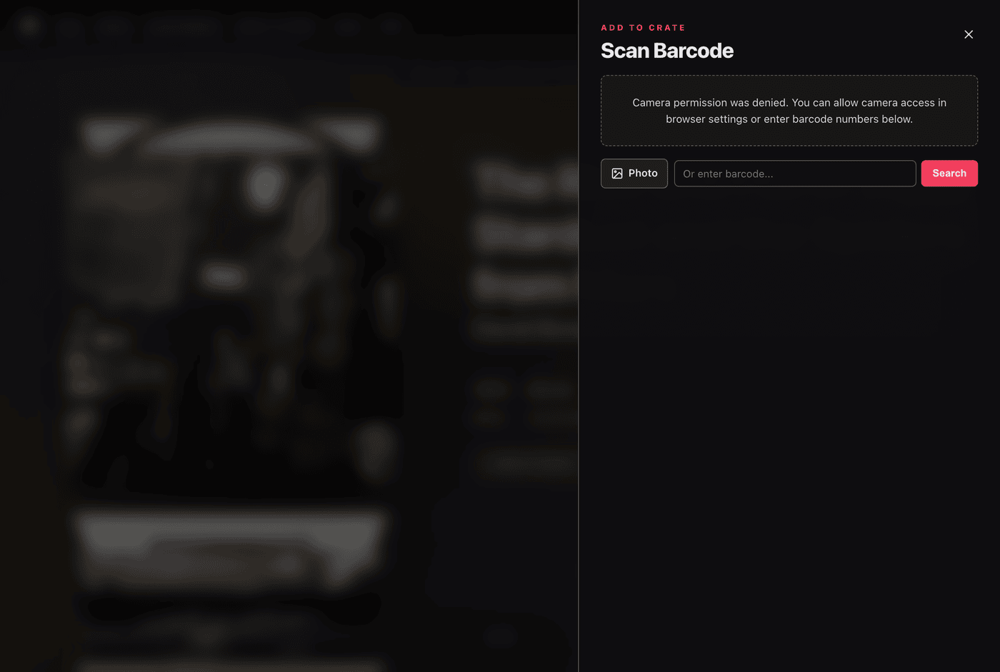

Scanning Barcodes
Find records by scanning the barcode on the jacket or hype sticker.
The scanner supports live camera detection, flashlight, image uploads, and manual barcode entry.
Opening the Scanner Drawer
You can access the barcode scanner at any time:
- Open Settings from the top navigation.
- Click Scan barcode to add album.
- Allow browser camera permissions when prompted.
The scanner drawer opens with a camera viewfinder and targeting frame.
Camera Scanning and Controls
Point your device camera at the barcode on the back of the album cover or outer sleeve:
- Framing: Align the barcode horizontally within the framing reticle.
- Flashlight: Tap the flashlight button to turn on the camera light in dim environments.
- Camera Switcher: Switch between available cameras on multi-lens mobile devices.
When a barcode is detected, the device uses that identifier to search Discogs for matching releases.
Photo Upload and Manual Entry
If camera access is unavailable, you can use photo upload or manual search:
- Photo Upload: Select an image file from your device. Spindex scans the image locally to read the barcode.
- Manual Search: Enter the barcode numbers into the input field and click Search.

Selecting the Matching Pressing
When multiple pressings share the same barcode, candidate releases display:
- Artist and album title
- Release year and country of origin
- Format description (such as LP, Album, Repress, Limited Edition, Red Vinyl)
- Catalog number and record label
Tap your pressing to view release details or add it straight to your crate.